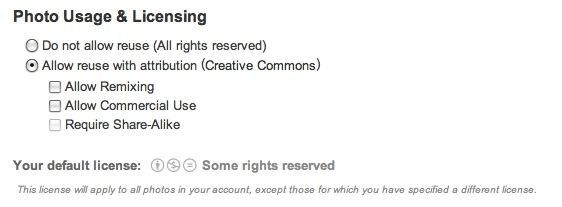
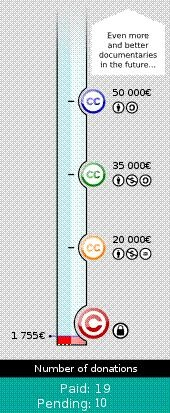

第二十九期：iSummit 08報導之二 - Open Business
|
|
CC 熱線
創用CC電子報歡迎您投稿
創用CC電子報從2006年5月發刊到現在，持續邀請許多各相關領域的先進，不管是網站平台經營者、學者教授、法律專業人才、資深網路觀察評論者，以及採用創用CC授權的傑出創作人士，都獲得許多讀者的肯定。
然而，開放內容的精神仍有許多子議題值得我們關注，因此，即日起，歡迎您若有任何與創用CC授權相關的主題，不論是法律政策、經營管理、社會觀察、資訊科技等領域，都不吝投稿給我們與其他讀者分享，並期望可以收到拋磚引玉之效。
徵稿活動即日起開始，投稿字數大約在1500-2000字，並附上您的個人背景資料。我們收到的稿件會先進行內部審閱，通過後我們會盡快通知您刊出的時間，稿件經刊登，將以刊登字數為準給予一字2元的稿酬。特別提醒您切勿一稿兩投，若是節錄自您其他長篇學術研究，也請您務必先行告知。
我要投稿。
CC 報新聞
Mozilla鼓勵使用創用CC授權來參與Concept Series計畫
辜雅蕾 (創用 CC)
Mozilla實驗室在八月初的時候釋出瀏覽器系列（concept series)計畫，目的在於號召所有使用者參與最新瀏覽器的概念創意，同時該計畫提供三個影片以收拋磚引玉之效。
這個計畫並不限於軟體工程師，也不需要提供程式設計，所有使用者都可以參與，這個計畫的目標就是要更多的人可以參與討論與設計。為了可以降低進入的門檻，以及鼓勵參與並融合新的概念以及想法，所謂的concept有三種格式，包括最簡單的想法（ideas)、將想法以圖像、描繪或是影片的方式組合起來（Mockups)以及最後不見得可以執行，但可以透過HTML、Flash或是任何方式表現出來的原型（Prototypes）。
Mozilla要求 ideas 與 Mockups 使用到的所有的素材，都能以創用CC授權方式釋出。至於 Prototypes 的程式碼、文件等，以 Mozilla 公眾授權條款釋出。有興趣者可直接前往Mozilla Labs瞭解，並 可同時瀏覽該計畫所提供的三段影片。
Google 的網路照片集服務增設創用CC授權選項
辜雅蕾 (創用 CC)
Google日前宣佈在新升級版的網路照片集服務（Picasa Web Albums service）將增設創用CC授權的選項供使用者選擇。因此，Picasa的使用者現在選擇將他們的照片以六種中的任一種創用CC授權條款釋出，使用的方式也很簡單，只要從檔案設定中選取就可以採創用CC授權，其頁面如下：
CC 放大鏡：iSummit 08報導之二—Open Business
趙柏強
"Open business… is just business — using new methods that tend to include (though not necessarily): Sampling (free content), reliance on modem technology, online community culture, increased transparency and fair sharing of returns with creators — still subject to familar business concerns. " — iSummit '08 Open Business track
柏克萊大學哈斯商學院開放式創新研究中心主任亨利．伽斯柏曾著有一本暢銷商管書籍 "Open Innovation"，這本書的中心概念是：由於公司不可能集結世界上所有最頂尖的人才，所以應該多多借重別間公司的創意，同時也把自己閒置、不知作何應用的創意開放給別的公司應用，方能獲取最大效益。雖然本書中提的方式多為專利轉讓或有限授權，但已經有公眾授權支持者經常強調的「合作」概念在裡頭。
與自由軟體相同，創用 CC 並不反商，事實上 Creative Commons 正試圖與商業組織合作、尋找合適的公眾授權商業模式。舉例來說，本年度 iSummit 會議重點之一：創用 CC 開發中的 CC+ ("CC Plus") 協定，就可以更有效的促進線上授權代理公司接受創用 CC 授權。
CC Plus
創用 CC 打創立開始就致力研究、發展授權的後設資料格式，唯有如此才能讓機器了解作品的授權方式、進而衍生其他應用，例如 CC 搜尋就是利用數位授權後設資料來協助您搜尋特定授權方式的素材。新的協定 CC Plus 說穿了就是另一個用以標注「若有其他需求，該到何處索求」的方法，讓機器也能找到著作人留下的授權媒介管道。

舉例來說，某甲是愛好創用 CC 的攝影師，今天將作品放上網路、並以「姓名標示—相同方式分享」授權他人使用。此時有一位創作者某乙很喜歡這張照片，想將其與自己的繪圖作品合成、卻希望改以「姓名標示—非商業性—禁止改作」釋出，該怎麼辦呢？就以往的作法，某乙必須先找到某甲，並且向他要求授權、使自己的作品可以改用另一種方式釋出（亦即不需遵守「相同方式分享」的條件），此時某乙可能付費給某甲、又或者以另外的條件來交換以便獲得授權。這個「要求授權」的機制或可轉換為線上服務：某甲直接與某丙公司合作，在某丙公司網站上販售此作品的其他授權條件，例如「毋需標示姓名」、「毋需以相同方式分享」等，標以價格；而某乙只要從某丙公司網站上點選所需購買的條件並付費、便可直接獲得某甲授權。
這樣的作法並沒有問題，但如果加上 CC Plus 機制、讓機器也能懂得該到哪裡請求額外授權，或許情況就會變成這樣：某乙看到某甲的相片後，在瀏覽器上立刻出現了「此相片以創用 CC 姓名標示—相同方式分享授權您使用，如您需要其他授權方式，請點此」的說明。某乙直接點選該說明，則前往某丙公司網頁、選定自己需要的授權方式後立即購買。某乙不需要費神尋找授權資訊，因為創用 CC 後設資料已經告訴瀏覽器此照片的授權方式、且 CC Plus 也說明了可前往某丙網站取得其他權利。
對鼓勵使用者創作內容的網站來說，可以加入 CC Plus 機制、並推薦使用者合適的授權代理。在會場中也有人表示，正在為自己的網站加入 CC Plus 機制、以加強使用者跟自身平台的黏性。
公平貿易
除了與授權方式相關的討論外，更多人有興趣的是企業的「態度」問題。在 iSummit 會場討論的許多夥伴認為，應該賦予 Open Business 一些道德上的責任。於是方才處理了公眾授權與商業之間的關係後，接下來就討論到利益的分配問題：從產品創造出來、一路到消費者手中，中間付出過努力的人們、各該得到多少報酬？這似乎就與公平貿易要追求的理想相當接近。
當今世上的企業經常仰賴「創造」某些資訊不對稱來為自己取得議價優勢，相對來說對於整體商業操作較不熟撚的兩端：創作人與消費者就不見得真知道怎樣的價格才是公平的（行銷人常說自己是在作「附加價值最高」的工作，以這個觀點來看還真諷刺）。公平貿易的一大要件為「價格公平」，鼓勵價值鍊的每一份子透過積極對話來了解對彼此「公平」的報酬。換到 Open Business 來，創作人、通路商及消費者也該能夠以透明的流程搭配相對完善的資訊，決定對彼此公平的價格。
這是不是很有所謂的「2.0」風格呢？透明公開的對話、誠實且快速地反應問題，尋求對彼此最好的解決方案。
其他方式？
參與會議的人大都同意， "Open Business" 這個詞彙原先還是個行銷用詞，不見得需要如何地嚴肅定義。在場也有一些人提出有趣的點子，例如紀錄片網站 "Then You Win" 。
這套紀錄片由法國 Loin de l'il 協會所籌組，目的是要以紀錄片形式關懷全球各地的發展情況。系列名稱 "Then you win" 由甘地的名言 "First they ignore you, then they laugh at you, then they fight you, then you win." 而來，這句話也經常被自由文化社群所引用。（我們現在正是最常被忽略、被笑的一群 :)
由於協會支持自由文化、網站也全由自由軟體所構成，這套系列影片一開始就打算以創用 CC 釋出，但他們採用了一種特別的模式：你可以捐款給這個網站、或購買紀錄片的 DVD，若此專案總收入達到 20000 歐元、則本片將以「創用 CC 姓名標示—非商業性—禁止改作」釋出；若專案總收入達到 35000 歐元、則本片將再以「創用 CC 姓名標示—非商業性—相同方式分享」進一步釋出權利；如果總收入突破 50000 歐元，則「非商業性」也條件也會拿掉、成為以自由軟體愛好者較為偏好的「姓名標示—相同方式分享」條款授權。為此、Loin de l'il 開發了一個可以依據捐款額度逐步釋出權利金流網站，未來也打算提供其他專案加以利用、並收取服務費供協會利用。
就筆者的觀點來說，這或許適合一些國片來使用：如果收入達到一定水準、就將權利再釋放、藉此更加散播自己的作品，日後要籌拍新影片如需找投資人、機會就大很多。無論如何， "Open Business" 的想法，也是相當開放、值得我們再多動點腦筋的。
還是需要營利
大會最後， "Open Business track" 並沒有完成「定義」的工作，但畢竟有個方向：「開放商業模式… 依然是『商業』，只是有些比較新的手法，例如：自由素材取樣、新科技、線上社群文化、透明、公平分配資源…等等，但仍然依據類似的商業考量施行。」因此，非營利組織的模式「至少要打平」應該不能算在內，既然是商業就要盡力提高股東的資產、也就是必須營利才行。
所以，他還是你我熟知的商業模式，只是某些部份更 "Open" 一點吧？如果把我們對於公平貿易等道德上的要求看作是企業公共關係營造上需要追求的形象，也說得通，莫怪乎 Jon 在他的微網誌這麼寫：
"Open Business" is a marketing term to be exploited to earn more money (and make people feel better). — rejon
走筆至此，大概把我們對這個名詞的想像略為描述了一回。如果您有興趣探索開放式商業的世界，維基百科及 iCommons 網站上都有相關文章，可以參考：
iCommons "Open Business" 相關文章
iSummit "Open Business track" Wiki 網頁
CC Plus
Then You Win
維基百科(資料中包括本文提到的書籍)
CC 雜貨店
本期雜貨店介紹一本照片集Freesouls。
Freesouls：這是一本由Creative Commons的執行長Joi Ito所拍攝並出版的照片集，內容都是他近年來拍攝捕捉的人像，其中亦不乏名人倩影，如今他將所拍的照片集結成冊出版，同時所有的照片都以創用CC「姓名標示」授權釋出。不僅如此，書中也有一些與CC相關人士的短文，該書將
有三種版本，預計在秋天就可以在Amazon購得。若對該書有興趣者，可至 Joi Ito的部落格 瞭解詳情；該書中的照片，目前已可在Freesouls 網站上瀏覽。